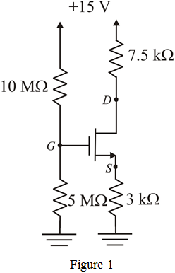
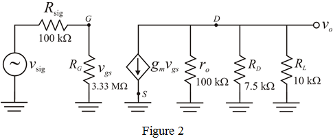

Calculate the gate to source voltage of this transistor.
The drain current for is,
Calculate the voltage at drain terminal.

Therefore, the assumed values are consistent with the values of the circuit components and the device parameters.
(a)
Refer to Figure P5.79 in the textbook for the discrete circuit amplifier.
Threshold voltage, and the process trans-conductance with width to length ratio, .
Draw the modified circuit under dc condition.

Apply voltage division rule.
Assume drain current as .
In the Figure 2, the voltage at source terminal is,
Calculate the gate to source voltage of this transistor.
The drain current for is,
Calculate the voltage at drain terminal.
Therefore, the assumed values are consistent with the values of the circuit components and the device parameters.
(b)
Device parameter ‘early voltage’, .
Calculate the output resistance of transistor.
Therefore, output resistance  is .
is .
Therefore, trans-conductance  of the device is .
of the device is .
(c)
Calculate the resistance .
.
Complete small-signal equivalent circuit for the amplifier is shown in Figure 3.

(d)
From the Figure 2, the circuit input resistance is,
Thus, the input resistance  is .
is .
Use voltage division rule to the left side loop.
Therefore, voltage gain is .
Apply Kirchhoff’s voltage to the right side circuit.
Substitute all known values in the equation.
Therefore, the voltage gain is .
Calculate the overall voltage gain of the circuit.
Therefore, overall voltage gain  of the circuit is .
of the circuit is .